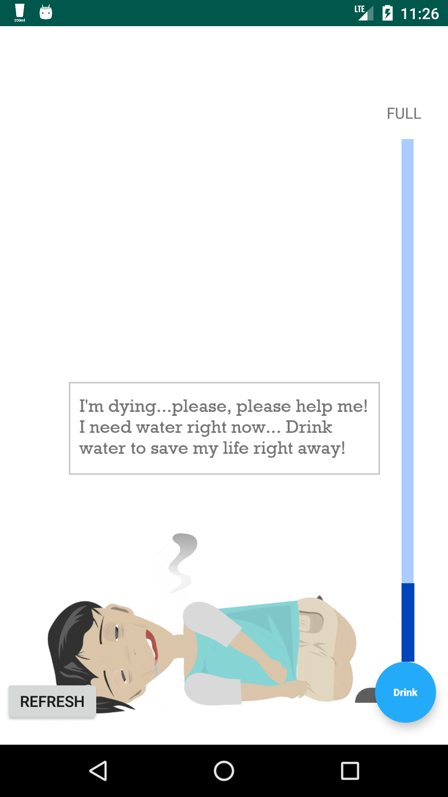
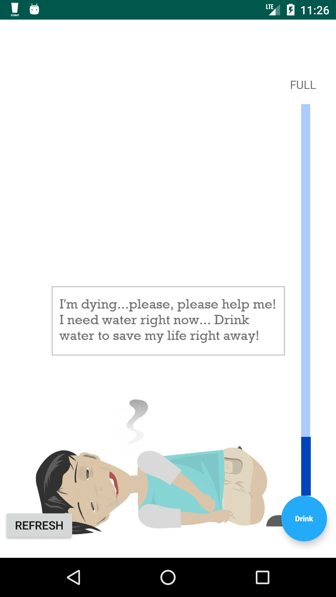

H2O
Design for water intake 中文

Introduction
In the course “Design for Behavior Change”, our team of five people focuses on designing a mobile intervention to motivate people to drink water regularly. We incorporate the concept of loss aversion into the design, aiming to explore how losing living objects could trigger users’ empathy and subsequently motivate their water intake behavior. We tested on three different living objects (plant, animal, and human) and conducted a 15-day field evaluation to 17 participants. Mobile logs and post-interview data are analyzed. Findings and future suggestions were written into an extended abstract named “Do I Care? How Losing a Living Object Triggers Empathy and Motivate Water Intake Behavior.”
Click here to watch a short video about the H2O app
Design Process
Motivation

Design rationale
Evaluation
Results
Discussion
Motivation & related work
Drinking water is essential in our daily lives. In order to maintain our health, we need to consume at least 2000 ml of water every day. While it seems an easy task to do, many people tend to forget this easy task. Many previous works that promote water intake behavior utilized living objects as a metaphor for water intake and provide feedback. We wonder why a specific object was chosen, so we included different types of living objects in our design and collected users’ reactions toward these objects. Moreover, we adopted the concept of loss aversion as the design mechanism, trying to figure out whether the fear of losing a living object would trigger users’ empathy and subsequently motivate their water intake behavior.
Design rationale
The final design of H2O app was modified based on the feedback of a user testing session with 5 participants testing on a paper prototype. The journey starts with a tutorial and a login page. The app contains five components: a notification that reminds user to drink water and save the object, a hydration bar to represent the level the hydration of both the object and the user, a living object that transition four stages of life over time, drink buttons for users to input their water intake, a refresh button to let users optionally refresh data from the database.
The app makes the objects dehydrate gradually over time and perish if the user did not drink any water during a two-hour interval. To prevent the objects from dying, users need to give water to the objects, serving as a reminder for them to drink water for themselves at the same time. Four different stages for each object are created as a means to actively trigger the user’s empathy.
Four stages of the three types of living objects are shown below.


 

Field evaluation
To evaluate the effectiveness of the intervention, we conducted a 15-day field evaluation study. First, we recruited 17 participants (8 men, 9 women, mean age = 22 years old) from diverse backgrounds, including students, teachers, public servants, and corporate employees.
Each participant was exposed to three different living objects throughout the study - human, animal, and plant. We randomized the order of displaying the objects for each participant. For example, a participant would start by seeing a human in the app for the first five days, followed by a plant in the next five days, and an animal in the last five days.
Mobile logs were collected to the database during the evaluation. At the end of the study, participants were invited to a semi-structured interview to discuss their experience.
Results

Table 1 shows the total amount of water intake and the times objects died. There was no significant difference regarding participants’ overall empathy toward the three objects. The overall total amount of water intake was moderate (1281mL), and the average times that objects died in the app was high (5.25 out of 7).
To find out the behavioral patterns behind the quantitative data, we analyzed the post-interview data. Overall, over half of the participants’ reactions toward the H2O app were positive. 61% of the participants subjectively felt that they had drank more water. Among the three objects, 7 participants (41.2%) said the animal object influenced them the most, followed by the plant object (3 participants). Another 3 participants said they didn’t have any preference. None preferred the human object.
The influence of the objects differs from one participant to another, and is usually tied to participants’ life experience and personal preferences towards the objects.
Discussion
In this present study, we developed the H2O mobile application that utilizes the loss-aversion mechanism to trigger empathy toward an object and eventually motivate water intake behavior. We discovered that the concept of loss aversion does not seem to be completely effective. Interestingly, during the post-interview, we noticed that some participants generated empathy by taking care of the object while others generated empathy through saving the object.
Participants had their own preferences toward each object. Our study sheds light on how people generated empathy from the objects, and showed different levels of empathy toward various objects.
Further discussions about the design and future work could be found in here.